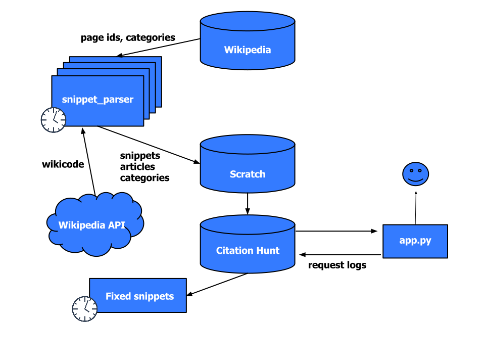

How can I begin to edit Wikipedia?
Manual of Style is 63 pages long!
What to edit?
Easy, uncontroversial, but still interesting
Citations![citation needed]
Simple Python (Flask) app
Parsing Wikipedia dumps
Hosted on Heroku
Client-side search over fixed categories (awesomplete)
Announced on the Village Pump
“I like the playfulness and concision of the tool. (...) Very different, new and unique”
https://en.wikipedia.org/wiki/Wikipedia:Village_pump_(idea_lab)/Archive_16#CitationHunt
https://tools.wmflabs.org/citationhunt
Moved to Tool labs:
Overnight success!
[citation needed]
#1lib1ref?
“As part of the Wikipedia 15 birthday celebration (#Wikipedia15) in January 2016, the Wikipedia Library team (@WikiLibrary) ran a social media campaign asking librarians all over the world to Imagine a World where Every Librarian Added One More Reference to Wikipedia. We called it #1lib1ref.”
https://blog.wikimedia.org/2016/04/25/engaging-librarians-1lib1ref/
“The combination of [Citation Needed] templates and the Citation Hunt tool created a really low participation threshold. (...) Moreover, these tools facilitate a behaviour common amongst librarians: chasing information in reference materials (this is a core part of reference librarian training).”
https://meta.wikimedia.org/wiki/The_Wikipedia_Library/1Lib1Ref/Lessons
“Did my civic duty and added some references for #1lib1ref. Also forgot how addictive Citation Hunt tool was ;)”
https://twitter.com/marykatwahl/status/825424325188608000
“(...) It’s like a pokie machine for librarians. DING dopamine hit.”
“Finding citation hunt to be oddly soothing”
“We need more simple, gamified but substantive models for contributing to Wikipedia. Citation Hunt was an excellent tool for engaging librarians, and we have received feedback from librarians that the small action made the biggest difference for their participation.”
https://meta.wikimedia.org/wiki/The_Wikipedia_Library/1Lib1Ref/Lessons
Internationalization:
More users:
Various editathons
Wikipedia/Twitter/Facebook promotion
https://en.wikipedia.org/wiki/Wikipedia:Citation_needed
More features:
Usage graphs
Server-side category search
New theme: Vector button style
Spanish, Czech, Swedish...
...but not Turkish
(yet!)
Technical review

===Competitions===
In May 2004, the websites Dark Blue and SearchGuild teamed up to create what they termed the "SEO Challenge" to Google bomb the phrase "[[nigritude ultramarine]]".{{cite web|last=Karch|first=Marziah|title=Google Bombs Explained|url=http://google.about.com/od/socialtoolsfromgoogle/a/googlebombatcl.htm|work=About.com|accessdate=2011-03-30}}
In September 2004, another [[SEO contest]] was created. This time, the objective was to get the top result for the phrase "[[seraphim proudleduck]]". A large sum of money was offered to the winner, but the competition turned out to be a hoax.{{Citation needed|date=March 2008}}
In March 2005's issue of [[.net (magazine)|''.net'' magazine]] published, a contest was created among five professional web developers to make their site the number-one site for the made-up phrase "crystalline incandescence".
becomes...
In September 2004, another SEO contest was created. This time, the objective was to get the top result for the phrase "seraphim proudleduck". A large sum of money was offered to the winner, but the competition turned out to be a hoax.<sup class="superscript">[citation needed]</sup>
Google Brain was initially established by Google Fellow [[Jeff Dean (computer scientist)|Jeff Dean]] and visiting Stanford professor [[Andrew Ng]]<ref name=ng-dean-blog>{{cite web|author1=Jeff Dean and Andrew Ng|title=Using large-scale brain simulations for machine learning and A.I.|url=http://googleblog.blogspot.com/2012/06/using-large-scale-brain-simulations-for.html|website=Official Google Blog|accessdate=26 January 2015|date=26 June 2012}}</ref> (Ng since moved to lead the artificial intelligence group at [[Baidu]]<ref>{{cite web|url=http://www.scmp.com/news/china/article/1519211/ex-google-brain-head-andrew-ng-lead-baidus-artificial-intelligence-drive|title=Ex-Google Brain head Andrew Ng to lead Baidu's artificial intelligence drive|publisher=[[South China Morning Post]]}}</ref>). As of 2014, team members included [[Jeff Dean (computer scientist)|Jeff Dean]], [[Geoffrey Hinton]], [[Greg Corrado]], [[Quoc Le]],<ref>{{cite web|title=Quoc Le - Behind the Scenes|url=http://www.technologyreview.com/emtech/14/video/watch/quoc-le-behind-the-scenes/|accessdate=20 April 2015}}</ref> [[Ilya Sutskever]], [[Alex Krizhevsky]], [[Samy Bengio]], and [[Vincent Vanhoucke]].{{citation needed|date=January 2015}}
becomes...
Google Brain was initially established by Google Fellow Jeff Dean and visiting Stanford professor Andrew Ng<sup class="superscript">[1]</sup> (Ng since moved to lead the artificial intelligence group at Baidu<sup class="superscript">[2]</sup>). As of 2014, team members included Jeff Dean, Geoffrey Hinton, Greg Corrado, Quoc Le,<sup class="superscript">[3]</sup> Ilya Sutskever, Alex Krizhevsky, Samy Bengio, and Vincent Vanhoucke.<sup class="superscript">[citation needed]</sup>
The snippet parser
Extract snippets or full sections
HTML (Wikipedia API) or plain wikicode output
Support for per-language template handling (yuck!)
Powered by mwparserfromhell and a lot of hackery
Some English numbers:
Future direction
The immediate stuff:
Longer term:
Prevent citogenesis? Bad sources?
Campaigns on special dates throughout the year?
Generalize to other kinds of templates and backlog